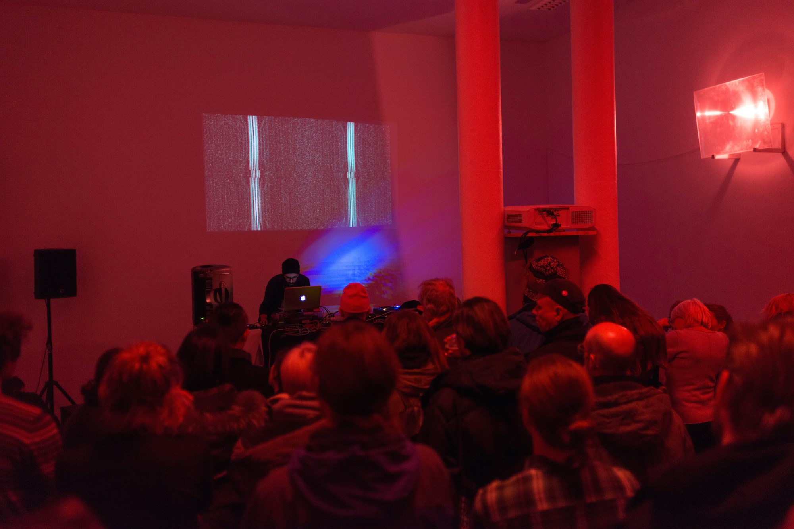

Arash Azadi english | русский | works | contact

DIACHRONY – TRANSFORMING MOVEMENT INTO LIGHT AND SOUND (2016)
Noise Music - Manifesto of Transfigured Poetry (2016)
Live @ Opening of Berlin CTM Festival 2017 "Anger Fear Love" (2017)
ДИАХРОНИЯ - ПРЕОБРАЗОВАНИЕ ДВИЖЕНИЯ В СВЕТ И ЗВУК (2016)
Шумовая музыка - Манифест преображенной поэзии (2016)
Live @ Открытие Берлинского фестиваля CTM 2017 «Гнев, страх, любовь» (2017)
Designed by Arash Azadi